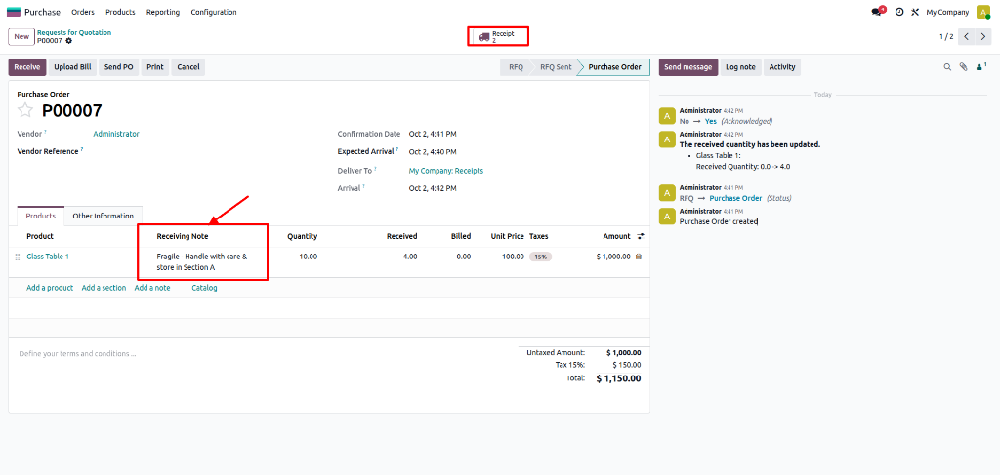
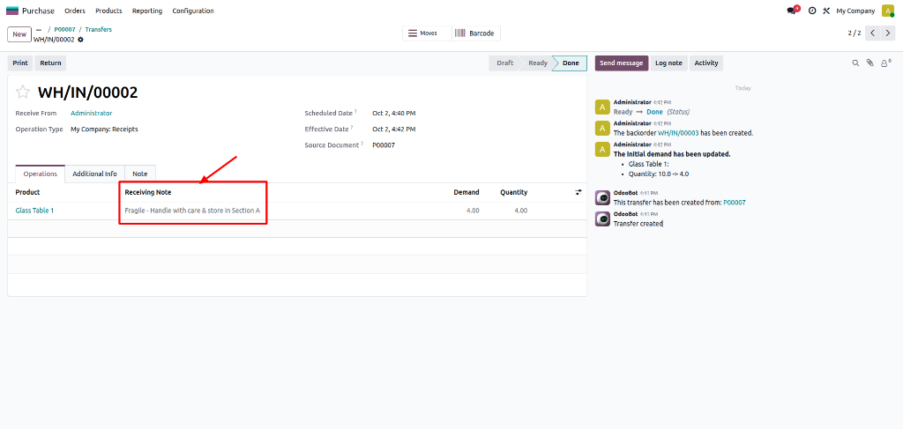
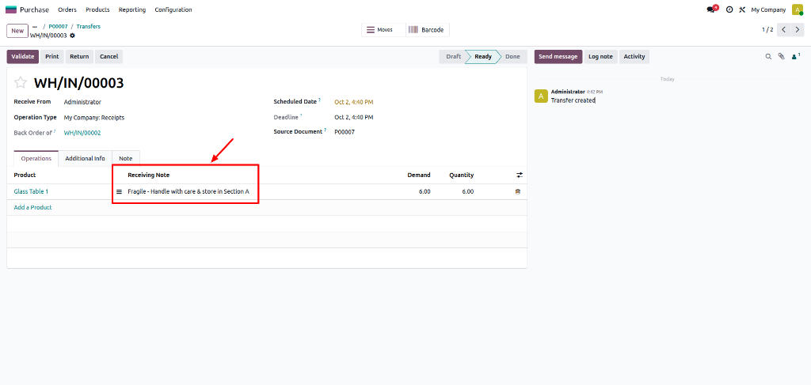

The Purchase Line Receiving Note module allows purchasing teams to add specific, product-level receiving instructions directly onto Purchase Order lines.
When a Purchase Order is confirmed, these instructions automatically copy to the corresponding incoming stock moves (stock.move).
Warehouse staff can view these receiving instructions as read-only notes on the incoming receipt screen. Instructions remain preserved even when partial receipts create backorders.



Is the receiving note editable on the incoming receipt?
No. The receiving note on stock moves is read-only for warehouse staff to prevent accidental alteration of purchasing instructions.
What happens when a partial receipt generates a backorder?
The receiving note is automatically copied to the backorder stock move, ensuring receiving instructions remain available for remaining items.
Does modifying the PO line note after confirmation update existing moves?
No. Original receipt stock moves preserve the instructions captured at PO confirmation time, maintaining historical integrity.